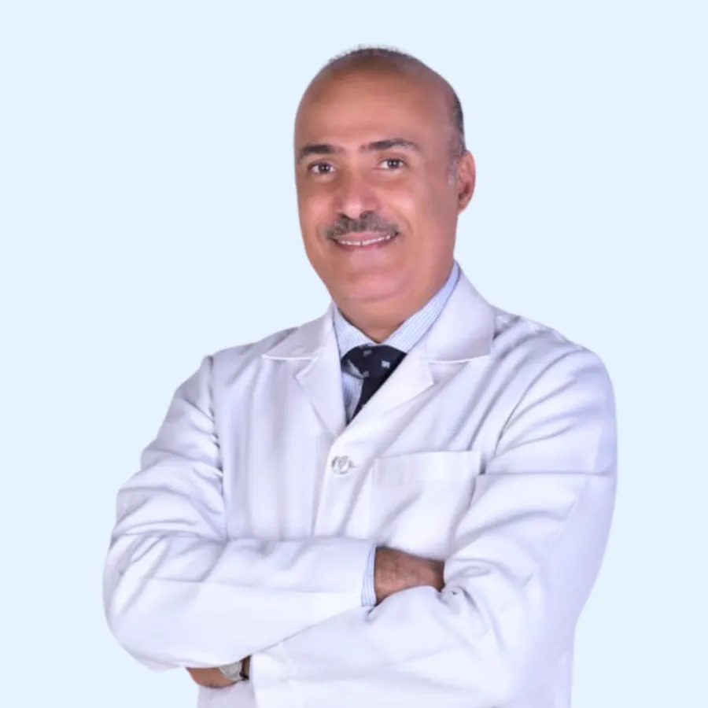

Dr. Sadiq Sharaf
Founder · General Dentist & Implantologist
Hollywood smile (veneers) and root canal treatment.
He goes through the treatment plan with every patient before starting, so you know what will happen and what it costs.
- BDS, Oral and Dental Surgery, Karnataka University, 1995
- Dental Implant Privilege Licence, NHRA, 2018
- Advanced Program in Dental Lasers, 150 CME hours, 2025